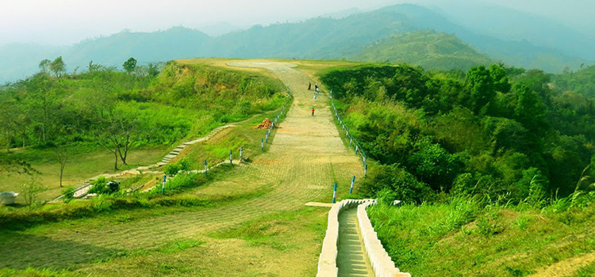
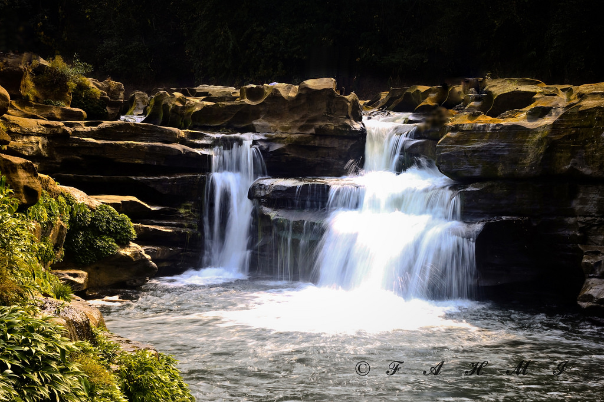
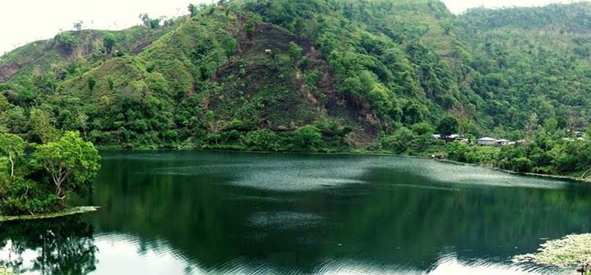
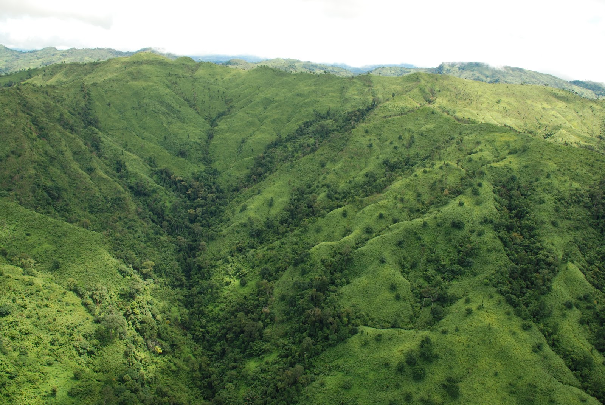
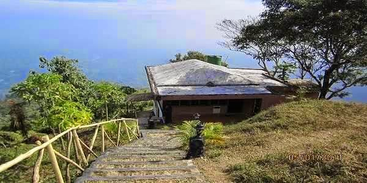

BANDARBAN
EXPLORE BANDARBAN
ABOUT
Bandarban (Bengali: বান্দরবান) is a district in South-Eastern Bangladesh, and a part of the Chittagong Division.[1] It is one of the three districts that make up the Chittagong Hill Tracts, the others being Rangamati District and Khagrachhari District.[2] Bandarban is regarded as one of the most attractive travel destinations in Bangladesh. Bandarban (meaning the dam of monkeys), or in Marma or Arakanese language as "Rwa-daw Mro" is also known as Arvumi or the Bohmong Circle (of the rest of the three hill districts Rangamati is the Chakma Circle, Raja Devasish Roy and Khagrachari is the Mong Circle, Raja Sachingprue Marma). Bandarban town is the home town of the Bohmong Chief (currently King, or Raja, U Cho Prue Marma) who is the head of the Marma population. It also is the administrative headquarters of Bandarban district, which has turned into one of the most exotic tourist attractions in Bangladesh. We welcome guests, but don't want Bandarban to become crowded or polluted like Rangamati. We don't want to lose our culture nor see it consigned to a museum. — Raja Aung Shue Prue Chowdhury, on tourism Bandarban lies, by bus, eight hours away from Dhaka, two hours from Chittagong and three hours from Cox's Bazaar. It is also possible to get there by a six-hour bus ride from Rangamati.The Buddha Dhatu Jadi, the Buddhist temple in Bangladesh, located in Balaghata, 4 km from the town.This place attracts many tourists every year. This Theravada Buddhist temple is made completely in the style of South-East Asia and houses the second largest statue of Buddha in Bangladesh. The waterfall named Shoilo Propat at Milanchari is another place tourists like to visit. The numerous Buddhist temples, known as kyang in local tongue, and bhihars in the town include the highly notable the Rajvihar (royal vihar) at Jadipara and the Ujanipara Bhihar. Bawm villages around Chimbuk, and Mru villages a little further off, are also lie within a day's journey from the town. Prantik Lake, Jibannagar and Kyachlong Lake are some more places of interest. Boat ride on the river Sangu is one of the main attraction here for tourists. Starting on January 7, 2015 the Home Ministry has enforced the provision of "no free passes" for foreigners visiting the three Chittagong Hill Tracts districts – Rangamati, Khagrachhari and Bandarban. As a result, foreigners need to submit an application to the Home Ministry a month ahead for their scheduled visit
CLIMATE
Bandarban's climate is classified as tropical. Bandarban has significant rainfall most months, with a short dry season. The Köppen-Geiger climate classification is Am. The average temperature in Bandarban is 25.9 °C. The rainfall here averages 2528 mm..
AREAS OF BANDARBAN
NILACHAL
NILGIRI
NAFAKHUM

SANGU RIVER
BOGA LAKE
KEOKRADONG
ACCOMODATIONS IN BANDARBAN
SAIRU
NILGIRI